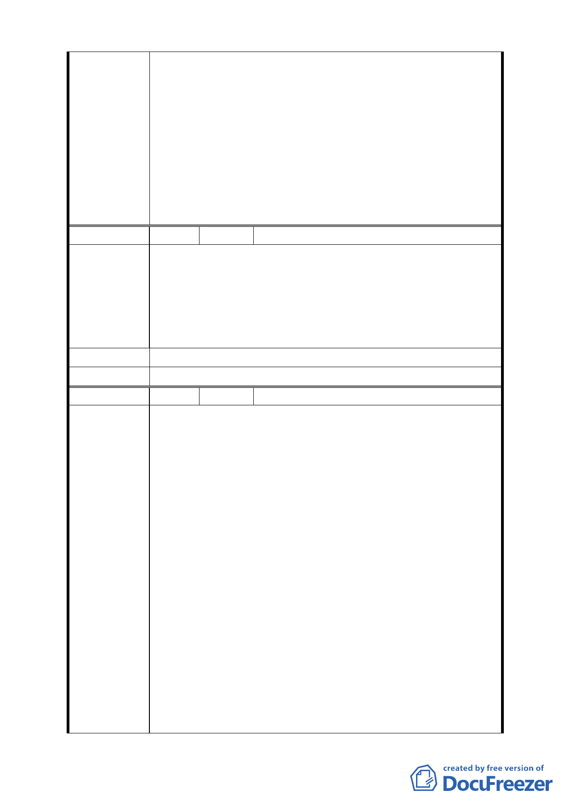

一、大彎北段地區係屬「2010 年臺北好好看」之科技產業
軸帶，基於其規劃理念係為提供產業進駐誘因、帶動城
市發展活力，故區內「2010 年臺北好好看」申請案之
「土地使用」部分，其因申請好好看所獲容積獎勵部分
委員會決議
同意得比照商三所允許之使用項目，惟不得作住宅之使
用；至於其餘部分仍應依本區 92 年都市計畫之規定辦
理，不得作住宅之使用。
二、有關臺北好好看申請案之建築物高度管制部分，經委員
會決議採不記名投票方式表決結果為「建築高度 70 公
尺（上限）、視覺廊道 40 公尺（下限）」。
編 號 3 陳情人 吳議長碧珠 99.4.9 依陳情人之意見轉述
一、「促進都市再生 2010 年臺北好好看」申請案所要求 99
年 3 月前必須取得建築執照及 99 年 9 月前必須開工等
陳情理由
時程管制，市府應詳細檢討內部行政整合協調時間，於
扣除不可歸責於申請人部分之時程後予以延長。
二、全案應秉持市府推案之美意，朝專案變更方式儘速完成
各階段之審議作業。
建 議 辦 法 （同上）
委 員 會 決 議 所提建議業已錄案供委員審議參考。
編 號 4 陳情人 奇泰建設有限公司等 4 家
一、「金泰段臺北好好看開發案」幾經折衝，已悉依台北市
政府都市發展局 (以下簡稱「都發局」)98 年 10 月 30
日北市都規字第 09836521507 號函規定表訂規範內
容、格式，於民國 98 年 11 月 3 日送請台北市都市計畫
委員會(以下簡稱「都委會」) 辦理公展在案、俟後獲
台北市政府府都規字第 09838862600 號函於 98 年 12
月 23 日至 99 年 1 月 22 日公展完成。
二、據「都委會」民國 99 年 3 月 22 日第 609 次都市計畫委
員會審議，會議結論稱：由市府都委會委員組成專案小
陳情理由
組續審，併案檢討「金泰段臺北好好看開發案」、臺北
市「基隆河 (中山橋至成美橋段) 附近地區土地使用分
區與都市設計管制要點」( 北段地區〉計畫案(下稱「大
灣北段通檢計畫」) 使得進行實質審查作業；惟「金泰
段臺北好好看開發案」自民國 97 年 10 月迄今歷經年餘
反覆研擬、檢討獲致共識後，始依「都發局」表訂版本
送件審查，今如須併「大灣北段通檢計畫」始得實質審
查，不免令陳情人等憂慮：
(一)「大灣北段通檢計畫」進程繁複，其結論又將牽動「金
泰段臺北好好看開發案」內容，如此一來，歷經年餘
- 36 -